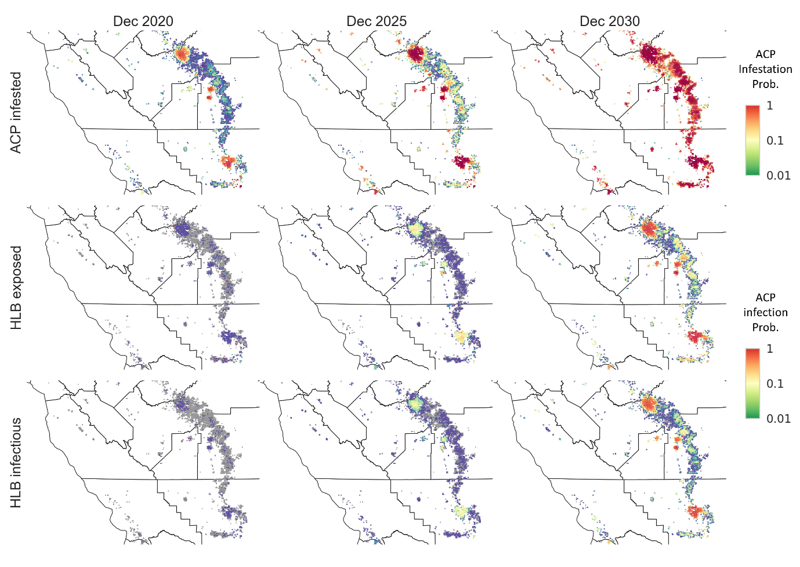
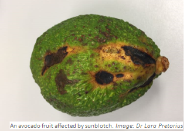
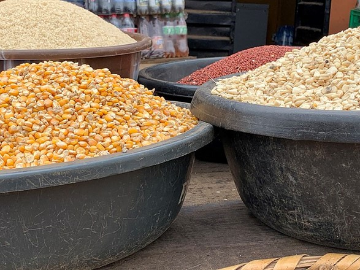
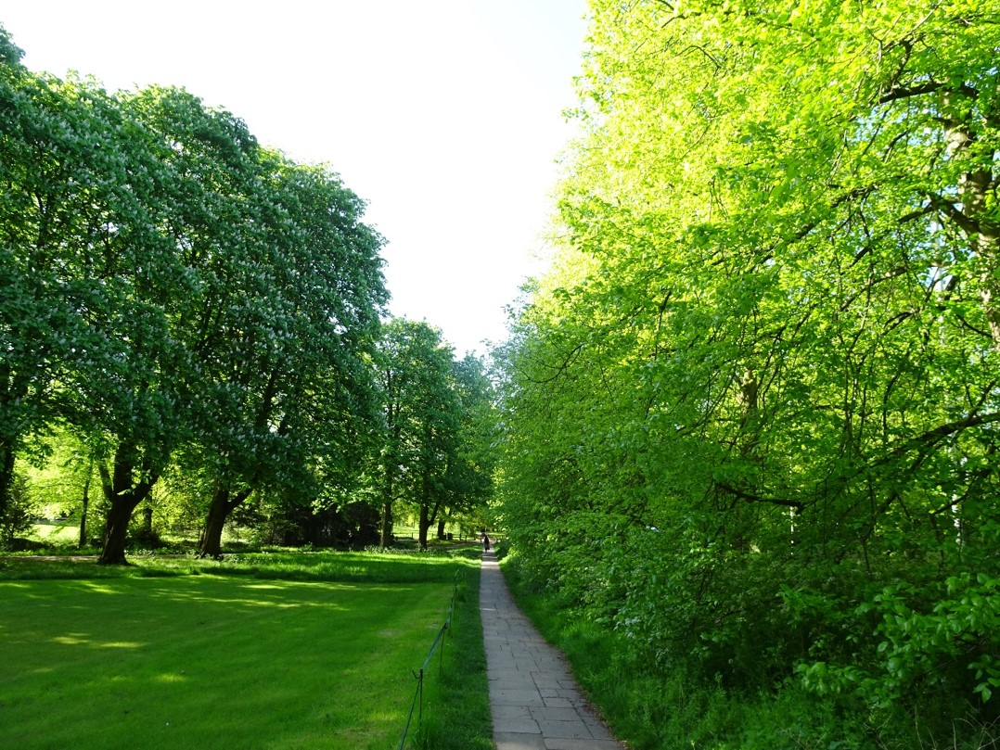

Orchard Crops
Citrus Huanglongbing (HLB)
Modelling the spread and mitigation of an emerging vector-borne pathogen: citrus greening in the U.S.
Citrus are one of the most popular classes of fruits with an estimated 75 million metric tons consumed globally each year. One of the most serious threats to citrus production world-wide is citrus greening (Huanglongbing disease), which is transmitted by the Asian citrus psyllid (Diaphorina citri), a small invasive insect that feeds and lays eggs on the developing flush shoots in citrus.
Trying to slow or halt the rapid spread of this devastating disease and it’s vector has been challenging in the main growing regions in the U.S. Team members teamed up with the Animal and Plant Health Inspection Service, USDA, to develop a new flexible model to address the expanding distribution of citrus greening across southern states of north America. They used surveillance data from Texas to predict risk in main growing regions across the state of California. Transferable models are vital to support famer’s decision-making between crop protection options, as well as shaping regulatory and operational policies for emerging large-scale outbreaks in new citrus-growing regions.

Figure above shows distribution maps predicting the potential spread of both insect vector (Asian citrus psyllid) and Huanglongbing disease (citrus greening) moving across the Central Valley, up to 2030. These assumptions are made using transferable parameters from Texas and adjusting for climatic conditions in the Central Valley region.
Project members
- Viet Nguyen
- Rich Stutt
- Professor Chris Gilligan
Avocado Sunblotch Viroid
Survey protocol for avocado sunblotch viroid in commercial orchards to demonstrate pest freedom
Equitable access to markets is an integral component of global food security. For many farmers and producers, particularly in low-income countries demonstrating that crops adhere to international plant health regulations can be resource-heavy and hinder their entry to the more profitable trading routes.

The task of undertaking extensive surveys and testing for presence of Avocado SunBlotch viroid (ASBVd) in orchards has the potential to be significantly reduced for avocado producers after a study carried out by members of the team and their international partners. The team developed a flexible protocol to calculate the optimal sampling size required to establish the presence or absence of the pathogen in orchards that would satisfy the constraints set by a regulatory authority. To demonstrate the effectiveness of the model more broadly, the team developed a user-friendly software application, providing the basis for extending the application to a wider range of economically important plant pathogens which prevent farmers with limited resources entering international supply chains.
Project members
- Daniel Bonnery
- Chris Gilligan
Partners
- Centre for Horticultural Science, Queensland Alliance for Agriculture and Food Innovation, University of Queensland, Australia
- Agricultural Research Council-Tropical and Subtropical Crops, Mbombela, South Africa
Stored Foods
Predicting hidden toxins in vital food supply chains
Maize is a primary income source and an important component for nutrition in the diets of many people in countries across Sub-Saharan Africa, Latin America, and Asia. Food production in several of these regions is already under increasing pressure and is predicted to further decline under conditions brought about by climate change. This is significant because the optimal conditions for the growth of the saprotrophic fungi that produce aflatoxins are associated with increased temperature and humidity. While high-income countries are able to rely on high tech solutions for reducing levels of contamination during growing, storing and transporting cereal crops, those that are less well-resourced require reliable, cost-effective methods of reducing the risk to food supplies.

Despite the awareness of the dangers of contaminated maize entering the food supply chain, and models that can accurately predict levels of Aspergillus and aflatoxin in the field, numerous cases of aflatoxin contamination at the factory gate are commonly reported. Where most risk prediction models have focused on the pre-harvest dynamics of A. flavus growth and aflatoxin production, the team’s integrated epidemiological modelling framework enables coverage of the entire supply chain from planting to delivery, and allows for predicting the costs and benefits of various aflatoxin mitigation interventions.
Project members
- Richard Stutt
- Chris Gilligan
Forestry and Urban Trees
UK Plant Health: Epidemic threats to UK forest, farmland and urban trees
The UK Government’s England Tree Action Plan (2021-2024) estimates that trees in our landscapes provide economic, cultural and social ecosystem services in the region of £4.9 billion per year, with a total asset value of £175 bn. Increased trade and climate warming have enabled new introductions from continental Europe to establish and spread into the UK. Oak Processionary Moth, Sweet Chestnut Blight and the larger eight-toothed European spruce bark beetle are amongst recent introductions which, if not controlled, could have a devastating impact on forestry and tree landscapes. Ash die-back, now wide-spread in the UK, threatens to destroy over 80% of the 185 million ash trees. The arrival of a beetle the Emerald Ash Borer, which has destroyed large areas of trees across USA and European Russia, could result in an even greater decline of native Ash in UK. To address these issues the team at Cambridge built an epidemiological toolkit that helps policymakers predict the status and future spread of tree diseases. Their models have been used to inform ministerial decisions on strategies such as the imposition of an import bans to reduce the risk of new introductions, surveillance strategies to support outbreak management and evaluation of potential control strategies to optimise the use of limited resources.
Predicting threats to food security (cam.ac.uk) https://doi.org/10.1002/ppp3.10195 https://doi.org/10.1111/afe.12468 https://www.plantsci.cam.ac.uk/research/groups/epidemiology-and-modelling
Project members
- Christopher Gilligan
- Cerian Webb
- Richard Stutt
- Yevhen Suprunenko

Avenues of trees of a single species are a striking feature in many towns and cities across England and Wales. These magnificent landscape features are frequently threatened by the arrival of invasive pests and pathogens which in the case of Dutch Elm Disease, saw the devastating loss of a single species from urbanised areas, within a decade.
This project examined how human activity and tree distribution across private and publicly owned land might affect the rate and direction of spread of invasive pests and pathogens.


The modelling results have important implications for the development of strategies to manage and control outbreaks, highlighting the need not only to consider distance from infested trees but also how connected trees are via road and rail networks. The study also demonstrates the need for effective pest biosecurity measures at international ports and transportation hubs and to consider the potential impact of species composition and distribution in an epidemiological context when planning future planting initiatives.
emerald ash borer
oak processionary moth
Webb, C.R., Avramidis, E., Castle, M.D., Stutt, R.O.H., Gilligan, C.A. 2023. Modelling the spread of tree pests and pathogens in urban forests. Urban Forestry & Urban Greening, 86, 128036